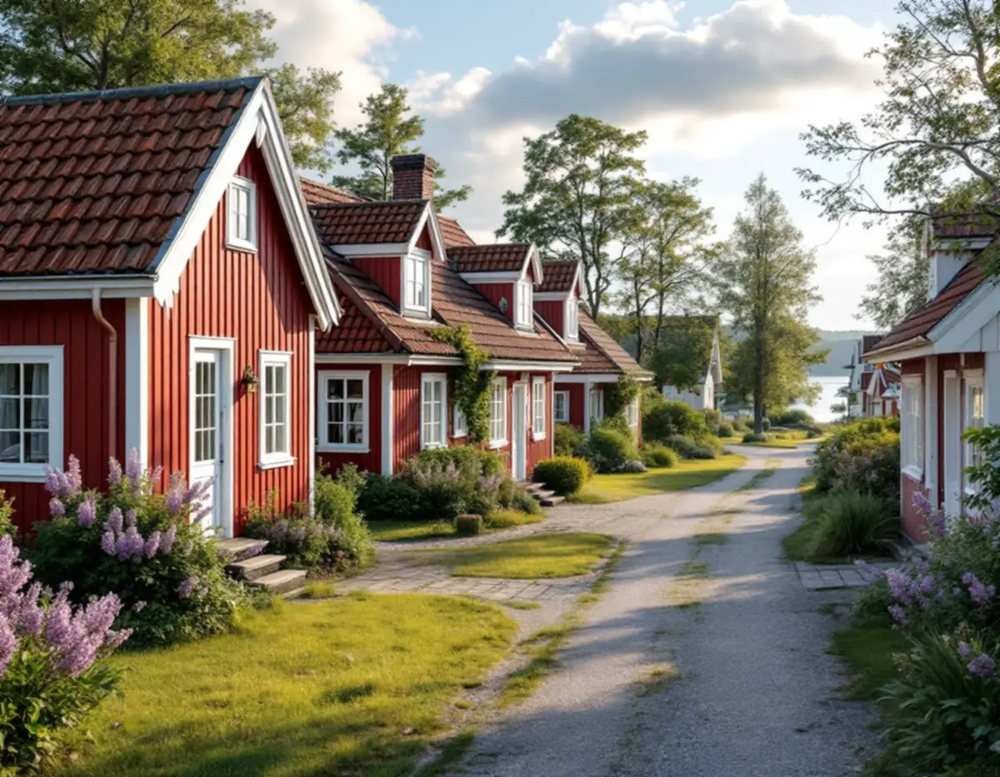
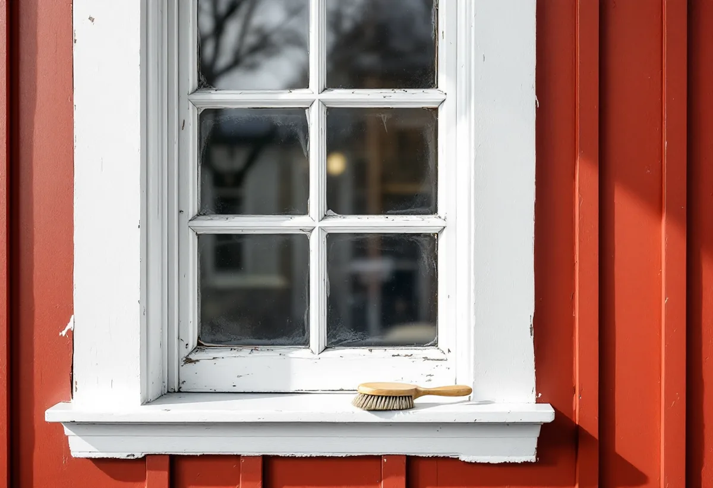
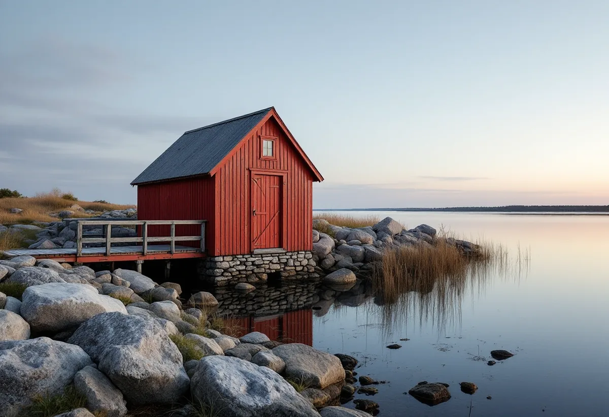

Platsbesök
Vi bedömer panel, snickerier, verandor och bodar var för sig.
I skärgårdsbyarna på Värmdö går samma bild igen: röd panel, vita snickeridetaljer och båthus nere vid hamnen. Bakom det enkla uttrycket kan det finnas två färgtyper som sköts på olika sätt. Geal Entreprenad AB målar om fasader på Värmdö och planerar arbetet efter vad varje del av huset är målad med.

Kommunens kulturmiljöprogram, Värmdö – Kulturhistoria i skärgårdsbygd, beskriver Gällnö by som den största byn i Svartsöarkipelagen och dess äldre bebyggelse som ovanligt väl bevarad. Bostadshusen ligger för sig i sluttningen mot Hemfladen, omgivna av lövträd och syrenbersåer, medan uthus och ekonomibyggnader ligger i utkanten av byn och båthusen nere vid hamnen. De flesta husen är rödmålade med snickeridetaljer i vitt, och några har glasade verandor med enkel snickarglädje runt fönster och dörrar.
På Hjälmö och Lådna är de flesta husen enligt programmet byggda kring sekelskiftet 1900, när många äldre parstugor revs och ersattes med hus med verandor och fyrdelad planlösning. De flesta bostadshusen har panel och är rödmålade med vita snickeridetaljer. Skärgårdsbyarna på Husarö, Ingmarsö, Svartsö, Gällnö och Hjälmö hör till kommunens 14 riksintressen för kulturmiljövården.

Röd panel och vita foder kan vara målade med två olika färgtyper, och därför tar vi vid platsbesöket reda på vad varje del bär. Riksantikvarieämbetets handbok beskriver röd slamfärg som en matt, vattenspädbar och fuktgenomsläpplig färg som fäster bra på ohyvlat virke men sämre på hyvlat. Den skyddar till viss del träet mot nedbrytning, och järnvitriolen i färgen anses ha viss konserverande effekt. En slamfärgad yta ska bara målas om med slamfärg.
Snickerierna kräver mer handarbete. Fönster rengörs bäst med sodatvätt för hand, löst kitt skrapas bort och blottade kittfalsar grundas innan de kittas. Även verktygen skiljer sig: till slamfärg rekommenderar handboken en mindre plafondpensel som rengörs med tvål och vatten, medan linoljefärg på fasadytor stryks tunt med en rund eller oval pensel på ungefär sju centimeter och en mindre pensel för svåråtkomliga ställen. Vi stryker panel och snickerier i separata moment, så att ingen färg hamnar där den inte hör hemma.
Vid Karklö hamn finns flera båthus bevarade, och strax ovanför ligger faluröda bostads- och ekonomibyggnader med mycket av sin 1800- och 1900-talskaraktär kvar. På Harö ligger sjöbodar och bryggor nere vid Byviken, och husen där är panelade och faluröda med varierande takmaterial. Bodarna står nära vattnet, och slamfärgen kan enligt Riksantikvarieämbetet strykas i både torrt och fuktigt väder utan att hållbarheten försämras, så länge solen inte ligger på för hårt.
Den fabriksblandade slamfärg som säljs i dag innehåller konserveringsmedel, och den kan behöva spädas med vatten för att få en strykbar konsistens. Den ska inte strykas för tjockt. Handboken varnar också för att det i handeln finns färger med namn som påminner om traditionell rödfärg men som har andra bindemedel och andra egenskaper, och råder att läsa innehållsdeklarationen och se upp för latextillsatser. Vi väljer därför färg till bodarna efter vad som redan sitter på dem.
Harö fick enligt kulturmiljöprogrammet ångbåtsförbindelse först på 1920-talet, och den äldre skärgårdskulturen levde kvar där längre än i andra delar av skärgården. Fortfarande finns här i större omfattning än på andra håll i kommunen en äldre folklig byggnadskultur, bland annat två parstugor i sluttningen mot Byviken. Harö är riksintresse för kulturmiljövården, och programmet föreslår att områdesbestämmelser med bland annat utökad lovplikt och varsamhets- och skyddsbestämmelser bör komma till stånd för delar av området.
Värmdö kommun skriver att det inte krävs bygglov för fasadändring på en- och tvåbostadshus eller komplementbyggnader, men att bygglov krävs för ommålning om fastigheten ligger inom ett kulturhistoriskt särskilt värdefullt område eller om byggnaden själv är särskilt värdefull. Sedan den 1 december 2025 gäller lovplikt även inom riksintressena för kulturmiljövården, och kommunens kulturmiljökarta visar vilka fastigheter som berörs. Om väderutsatta fasader och Gustavsberg kan du läsa under målare på Värmdö, om sommarvillor och q-märkta hus under fasadrenovering på Värmdö och om målning i stort under målare.

Vi bedömer panel, snickerier, verandor och bodar var för sig.
Vi kontrollerar om fastigheten ligger i ett riksintresse eller värdefullt område.
Panel, snickerier och bodar står som egna poster med färgtyp och strykningar.
Rödfärgen borstas fri från lös färg och lav, snickerierna tvättas och skrapas.
Rödfärg och snickerifärg stryks i separata moment.
Vi går runt huset och bodarna med dig och bättrar det som behövs.
Rotavdrag ges för arbete i både permanentbostad och fritidshus som du äger, och målning av fasader räknas som rotarbete. Komplementhus som förråd kan höra till småhuset om arbetet görs på tomten i nära anslutning till bostaden. Att reparera och underhålla båtbryggor, staket och murar ger däremot inget avdrag.
Avdraget är högst 30 procent av arbetskostnaden, högst 50 000 kr per person och år och högst 75 000 kr tillsammans med rutavdrag. Färg, material och resor ger inget avdrag. Geal drar avdraget direkt på fakturan.
Hur många byggnader som ska målas, hur mycket snickerier och verandor huset har, om panel och snickerier har olika färgtyp och hur material och ställning tar sig ut till fastigheten väger tyngst. Efter ett gratis platsbesök får du ett skriftligt kostnadsförslag.
Fasad, fönster och invändig målning.
Målare i Stockholm →Takbyte, takbesiktning och plåtarbeten.
Takläggare på Värmdö →Skärgård, vind och fritidshus.
Takrenovering på Värmdö →Fritidsområden, kulturmiljö och avlopp.
Attefallshus på Värmdö →Brunnsvatten, salt och eget avlopp.
Badrumsrenovering på Värmdö →Byggrätt, PFO-områden och strandskydd.
Byggföretag på Värmdö →Sommarvillor, skyddade hus och helårsboende.
Fasadrenovering på Värmdö →Gustavsbergs bevarandevärda fönster.
Fönsterbyte på Värmdö →Glasverandor och äldre fönster.
Fönsterrenovering på Värmdö →Fritidshus som blir permanentbostäder.
Golvläggare på Värmdö →Gamla brädgolv och skonsam slipning.
Golvslipning på Värmdö →Fritidshus, eget avlopp och Gustavsberg.
Köksrenovering på Värmdö →Skärgårdshus, fritidshus och bruksmiljö på Värmdö.
Målare på Värmdö →Plåttak och beslag på Värmdö.
Plåtslagare på Värmdö →Fritidshus som blir helårshus.
Snickare på Värmdö →Anmälan, kulturmiljö och tak i skärgårdsbyarna.
Takbyte på Värmdö →Riva eller spara tapetlagren.
Tapetsering på Värmdö →Fritidshusplaner och lovfria 30 m².
Tillbyggnad på Värmdö →VVS, varmvattnet och byggreglerna.
Totalrenovering på Värmdö →